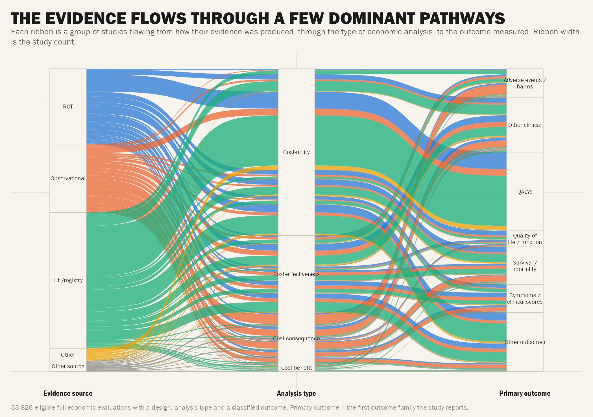
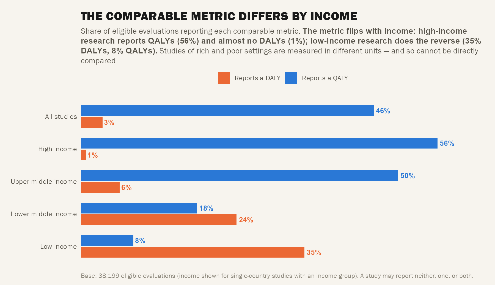
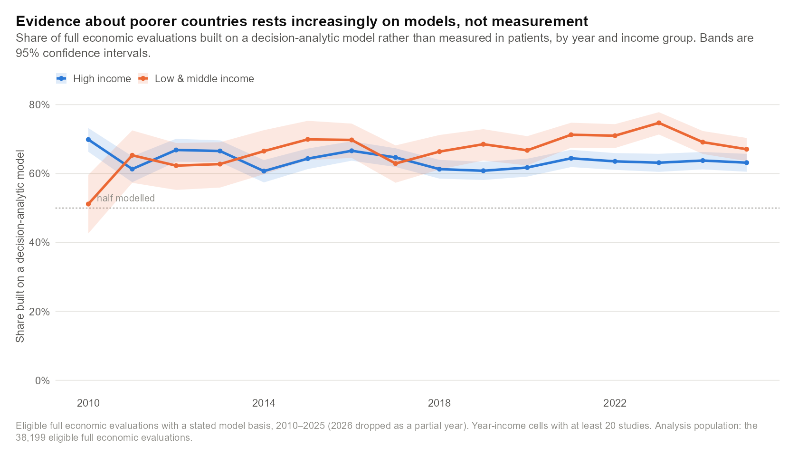
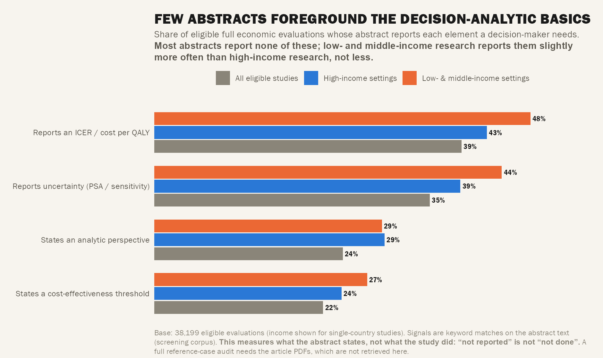
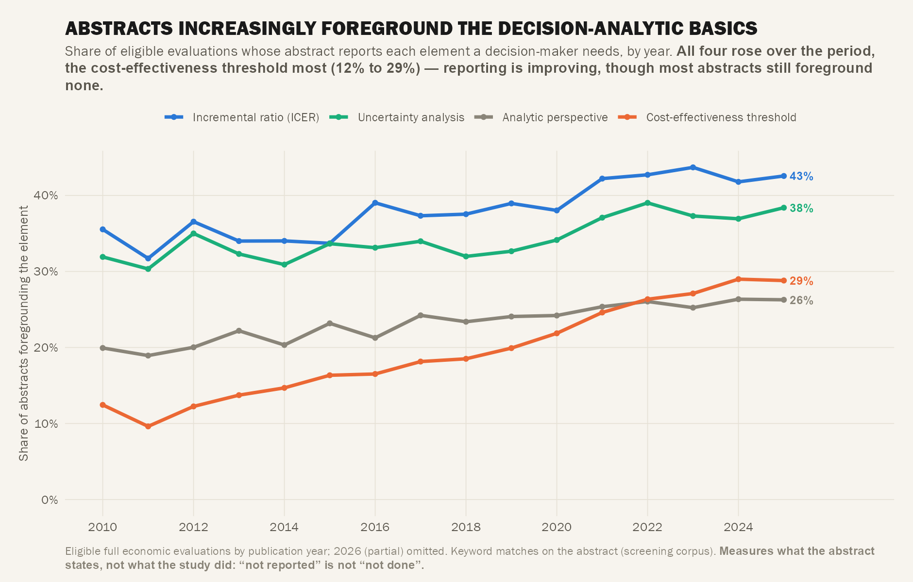
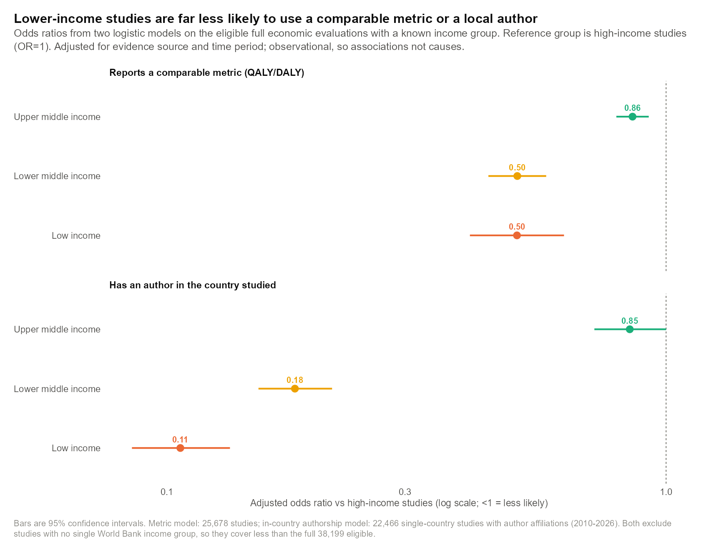

Act III — Methods & Quality
Act III: Methods & Quality
What gets measured, and how well? Variables: 14 outcome families, uses_qaly, econ_eval_type, design_basis, model_based; abstract text for C14.

C10 — Outcome Families
14 outcome families, direct-labelled bar. What kinds of benefit are counted?
QALYs, survival/mortality, and clinical events dominate. “Unspecified benefit” catch-all reveals reporting quality gaps.

C11 — The Comparable-Metric Currency
QALY vs DALY use by income group, grouped bars. The metric flips by income.
QALYs for rich, DALYs for poor — cross-income comparability is broken. HIC: ~55% QALY, ~5% DALY. LMIC: ~35% QALY, ~25% DALY. No common currency across the income divide.

C12 — Model vs Measurement Over 17 Years
model_based × year × income. Is the field drifting to modelled (vs measured) evidence?
Model-based share rising across all income groups; LMIC model-dependency higher than HIC at every time point. Field increasingly relies on decision models, not trial-based evidence.
C13 — Source → Analysis → Outcome (Alluvial)
Alluvial diagram:
design_basis → econ_eval_type → outcome family. How evidence flows from design to method to benefit.
RCTs flow heavily to cost-utility/QALY; observational designs spread across types; model-based studies dominate cost-utility pathway.

C14 — Decision-Framing in the Abstract
Grouped bar (4 elements × All/HIC/LMIC): ICER, threshold, uncertainty (PSA), perspective. Abstract-only proxy — “not reported ≠ not done”.
Most abstracts report NONE of these. ICER 39%, threshold 22%, PSA 28%, perspective 31%. LMIC reports them slightly MORE often than HIC, not less. Honest stand-in for blocked reference-case audit.

T5 — Decision-Usefulness Over Time
Share of abstracts foregrounding each decision-analytic element by year (2010–2025). Temporal companion to C14.
All four rose: threshold most (12%→29%), ICER (25%→48%), PSA (15%→38%), perspective (18%→42%). Reporting improving but majority still foregrounds none.

3.5 — Method–Outcome Mismatch (Lancet)
Heat map: econ_eval_type × outcome family. Do methods report the outcome their definition requires? (CUA without QALY = mismatch).
~9.5% of CUAs report no QALY outcome. Mismatch reveals extraction noise floor (different model calls for type vs outcomes).
Act III Summary
| Figure | Status | Strength | Key Message |
|---|---|---|---|
| C10 | ✅ Built (exploratory) | ★★ | 14 outcome families, direct-labelled |
| C11 | ✅ Built | ★★★ Hero | QALY/DALY split by income — no common currency |
| C12 | ✅ Built | ★★★ Hero | Model-based rising; LMIC more model-dependent |
| C13 | ✅ Built | ★★★ Hero | Alluvial: design → type → outcome flow |
| C14 | ✅ Built | ★★★ Hero | Abstract decision-framing: LMIC ≥ HIC |
| T5 | ✅ Built | Timeline | All 4 elements rising; threshold most (12→29%) |
| 3.5 | ✅ Built (exploratory) | Paper | ~9.5% CUA without QALY = extraction noise floor |
| 3.6 | 🔴 Blocked | — | Reference-case compliance (needs PDF extraction) |
Previous: ← Act II: Topic & Disease • Next: Act IV: Geography & Authorship →